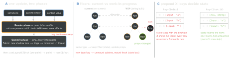

react-native · folio
In one line: A render calls your components to produce a new element tree; reconciliation diffs it against the current fiber tree by type + key; only the differences are committed — on RN as a new Fabric shadow tree that is laid out (Yoga) and mounted as native-view mutations. Re-render ≠ native update.
Download PDF Print view LaTeX source


How it works
- Element = immutable description
{type, props, key}, cheap, recreated every render. Fiber = the persistent instance record: state, hooks list, effects, links;current+alternate(WIP) double buffer (diagram B). - Diff heuristics (O(n), not optimal tree edit): different type at a position → destroy + recreate the subtree; same type → reuse, update props; children matched by key, else by index.
- Render phase must be pure — React may run it twice, pause it, or drop it. Commit applies mutations atomically, then runs layout effects; passive effects (
useEffect) run after paint. - RN: React’s commit hands Fabric a new immutable shadow tree; Fabric diffs it with the mounted one and sends the UI thread only the mutations — like a
UICollectionViewdiffable snapshot.
What re-renders — and what does not
- Yes: own state set to a new value (
Object.is); the parent rendered (props equal or not — unlessReact.memo); a consumed context value changed; an external store snapshot changed. - No: mutating state in place (same reference → bail out: a bug), writing a
ref, a global variable. Props never “change on their own”.
Batching & concurrent React on RN
- Automatic batching (React 18): all
setStates in one tick (handlers, promises, timeouts) → one render. On RN it needs the concurrent root = New Architecture; the legacy root batched only inside React event handlers. startTransition/useTransition: mark an update non-urgent — it renders interruptibly, urgent input (typing) wins.useDeferredValue: lag a value behind. Suspense: show a fallback while a child waits (React.lazy, data via a library oruse). Fully supported with Fabric; not on the legacy renderer.- StrictMode (dev only): renders twice, initialisers/reducers twice, and mount → unmount → mount for effects — surfaces impure renders and missing cleanups. Production runs once.
Host components & Text rules
View→UIView,ScrollView→UIScrollView,TextInput→UITextField/UITextView. Layout-only Views are flattened away (collapsable={false}keeps one).- Every string/number must sit inside
<Text>. Nested<Text>= spans of one attributed string (NSAttributedString) — the only place styles inherit. AViewhas no font.
Example — identity bugs
// BAD index key: prepend -> state shifts rows (diagram C)
{items.map((it, i) => <Row key={i} item={it} />)}
<FlatList data={items} keyExtractor={it => it.id} ... /> // OK
// BAD component defined in render: NEW type every render
function Screen() {
const Row = () => <TextInput />; // remounts: text+focus lost
return <Row />; // fix: hoist to module level
}
// BAD on RN: count=0 renders raw "0" outside <Text> -> red box
{count && <Badge n={count} />} // OK: {count > 0 && ...}
<Profile key={userId} /> // new key = deliberate resetYoga flexbox vs web CSS
| Web | RN (Yoga) | |
|---|---|---|
flexDirection | row | column |
flexShrink | 1 | 0 (overflow instead) |
alignContent | stretch | flex-start |
flex | shorthand | one number |
| units | px, em, rem, vh | unitless dp/pt or % |
| inheritance | cascade | none — only Text in Text |
position | static | relative |
| box model | content-box | border-box |
Traps
- “Re-render = slow”: render is JS work; native cost is only the committed diff. Profile before
memo. - Index keys only for static, never-reordered lists without row state.
- After
setStatethe variable still holds the old value — state is a per-render snapshot.